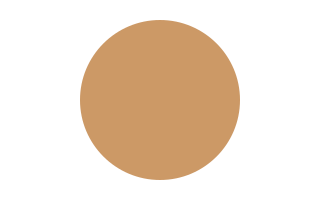

Cellular Respiration Reference
Cellular respiration converts glucose and oxygen into carbon dioxide, water and usable energy stored as adenosine triphosphate. Every living cell depends on a steady supply of that energy, so the pathway is among the most conserved processes in biology.
The process runs in three linked stages. Glycolysis happens in the cytoplasm, while the Krebs cycle and the electron transport chain take place inside the mitochondrion. Each stage hands its products to the next one.
Stages at a glance
| Stage | Location | Net ATP |
|---|---|---|
| Glycolysis | Cytoplasm | 2 |
| Krebs cycle | Mitochondrial matrix | 2 |
| Electron transport chain | Inner membrane | about 26 |
Electron carriers
| Carrier | Produced in | Electrons delivered to |
|---|---|---|
| NADH | Glycolysis | Electron transport chain |
| Krebs cycle | ||
| FADH2 | Krebs cycle |
Energy yield formula
The overall reaction balances six carbon atoms on each side of the equation.
Simulating ATP yield
The helper below estimates the ATP produced from a number of glucose molecules.
def atp_yield(glucose: int) -> int:
"""Approximate ATP produced per glucose molecule."""
return glucose * 30
Mitochondrion diagram

Pathway sketch
ATP by stage
The chart compares the net ATP each stage contributes.
Embedded worksheet
Component notes
Late figure

The Krebs cycle turns twice for each glucose molecule, releasing carbon dioxide on every turn and refilling the pool of electron carriers.
This hidden paragraph must never appear in the note.